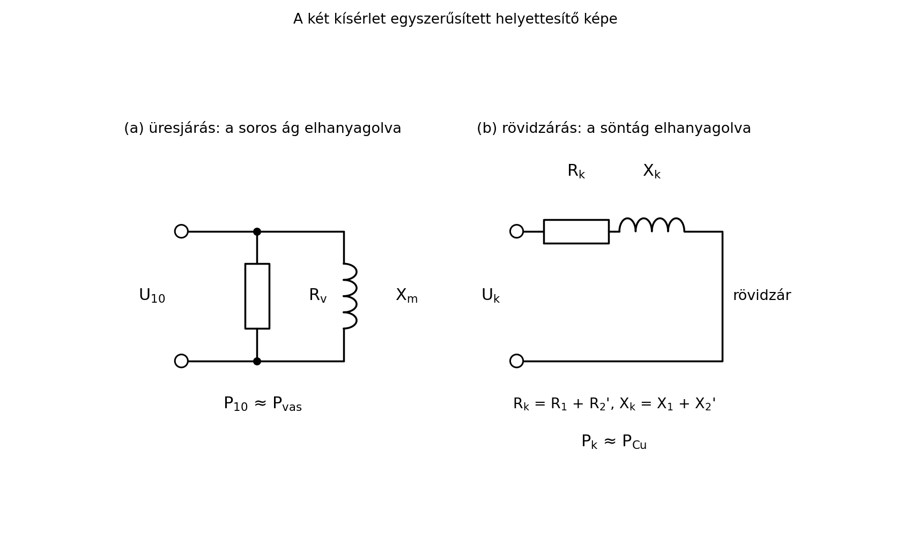

Képzeld el, hogy egy vezérlőszekrényt szerelsz egy ipari gépsorhoz. A főáramkör 230 V-ról vagy 400 V-ról megy, de a mágneskapcsoló tekercsét 24 V váltakozó feszültséggel kell vezérelned. Vagy éppen egy családi házban kell kiépítened egy 12 V-os halogén világítási kört, miközben a lakáselosztóban 230 V áll rendelkezésre.
Mindkét helyzetben ugyanarra van szükség: egy olyan készülékre, amely a váltakozó feszültség nagyságát megváltoztatja, de a frekvenciát változatlannak hagyja. Ez a készülék a transzformátor. Ha nem értenéd a működését, a bekötését, az üresjárási és rövidzárási viselkedését, akkor alulméreteznéd, túlmelegítenéd, vagy nem vennéd észre, ha egy mérés hibás értéket mutat.
Ebben az alfejezetben tehát a transzformátort a szerelői gyakorlat felől közelítjük meg: megértjük a vasmagos, zárt mágneses körű elv lényegét, a feszültség- és áramáttételt, valamint azt, hogy mit jelent a gyakorlatban az üresjárási és a rövidzárási kísérlet.
Az Elektromágneses indukció, önindukció és az RL-tag alfejezetben megtanultad, hogy egy tekercsben csak akkor indukálódik feszültség, ha a rajta átmenő mágneses fluxus időben változik. Két egymás melletti, levegővel csatolt tekercsnél a mágneses erővonalak nagy része szétszóródik a térben, így a második tekercs csak kevés fluxust kapna. Ezt a csatolást javítja a vasmag, amely a mágneses erővonalakat nagy áteresztőképessége miatt magába zárja, és a primer tekercstől a szekunder tekercsig vezeti.
A mai transzformátorok alapelve a zárt vasmag. Ez a konstrukció a magyar villamosipar egyik legnagyobb büszkesége.
A transzformátor elve Faraday felfedezésére épül, de a ma is használt, jó hatásfokú, zárt vasmagos elrendezést a Ganz-gyárban dolgozó Zipernowsky Károly, Déri Miksa és Bláthy Ottó Titusz szabadalmaztatta 1885-ben. Az ő nevük kezdőbetűiből származik a „ZBD” jelölés, amely a transzformátor történetében mérföldkő.
A korábbi, nyitott vasmagú kísérleti eszközökben a mágneses erővonalak nagy része elveszett, ezért a hatásfok rossz volt. Bláthy és munkatársai ezzel szemben zárt vasmagot alkottak: a tekercseket egy önmagába záródó, lemezelt vasmagra helyezték. Ez a felismerés tette lehetővé a nagy távolságú energiaátviteli hálózatok építését, mert így a feszültséget gazdaságosan fel lehetett transzformálni, majd a fogyasztóknál lecsökkenteni.
Figyelem. A Ganz-gyárban kifejlesztett klasszikus konstrukció alapelve változatlan, de a konkrét gyártói adatokat, anyagminőségeket és a ma kapható típusok paramétereit mindig a gyártó adatlapjáról kell ellenőrizni.
A legegyszerűbb egyfázisú transzformátor vázlatosan a következő elemekből áll:
A kistranszformátorok vasmagja jellemzően E- és I-lemezekből rakott köteg. A lemezeket rétegenként felváltva rakják: az egyik rétegben az E-lemez van alul és az I-lemez felül, a következőben fordítva. Így az illesztési rések nem esnek egymás fölé, a fluxus a szomszédos lemezen át megkerüli a rést, és kisebb lesz az üresjárási áram és a búgás. A következő ábra (a)–(c) része a lemezeket, a váltott rakást és a lemezelés okát mutatja; a (d) és (e) rész a két alapelrendezést: a köpenytípusú magon mindkét tekercs a középső oszlopon ül (belül a primer, kívül a szekunder), a magtípusú keretmagon a tekercsek az oszlopokon vannak – a háromfázisú transzformátor háromoszlopos magja ennek bővítése.
Figyeld meg a (c) részen: a tömör vasban egyetlen nagy örvényáram-hurok alakul ki, a szigetelt lemezekben csak kicsik – ezért nem szabad a lemezköteget sorjázni, köszörülni vagy a lemezeket összehegeszteni, mert a sérült szigetelés helyi melegedést okoz. A HTML-kiadásban az (a)–(e) nézetek külön nagyíthatók, a részek rámutatásra kiemelődnek. Az örvényáram haszna, kára és a belőle következő szerelési szabály: Elektromágneses indukció, önindukció és az RL-tag, „Örvényáramok a gyakorlatban”.
A világítási célú, csengőhöz való vagy vezérlőáramkörű kistranszformátoroknál gyakran a vasmag a tekercsekkel együtt műgyantába van kiöntve, vagy a tekercs egy tekercstestben ül. A szerelői gyakorlatban tehát ugyanazt az elvet kell fölismerned egy ezer kVA-es olajhűtésű elosztótranszformátornál is, mint egy 8 VA-es csengőtranszformátornál.
A vezérlőszekrénybe szerelt, nyitott kivitelű vezérlőtranszformátor részeit a következő ábra számozza: a lemezköteg (1), a tekercstest a primer és szekunder tekerccsel (2), a primer kapcsok (3) – itt 0–230–400 V megcsapolással, így 230 V-hoz a 0 és 230, 400 V-hoz a 0 és 400 kapcsot használjuk –, a szekunder kapcsok (4), a hosszlyukas szerelőszögek (5), a PE-csatlakozás (6), az adattábla (7) és a köteget összefogó csavarok (8). A (b) rész egy példa-adattáblát mutat.
Bekötés előtt az adattáblán ellenőrizd a primer feszültséget és a névleges teljesítményt VA-ben: a példán a tartósan levehető szekunder áram. Tipikus hiba, hogy 230 V-os hálózatra a 0–400 V kapcsokat kötik (a szekunder feszültség ekkor kb. a névleges 58 %-a), vagy fordítva. A szekunder oldal védelmét a gyártó előírása szerint kell kialakítani. A HTML-kiadásban az adattábla sorai és a részek rámutatásra magyarázatot adnak.
Törvény. A transzformátor a nyugalmi (transzformátoros) indukció jelenségén alapul. A primer tekercsre adott váltakozó feszültség váltakozó áramot hoz létre, ez a vasmagban váltakozó mágneses fluxust kelt, és ez a fluxus a szekunder tekercsben feszültséget indukál.
A primer tekercsben indukált feszültség nagysága szinuszos táplálásnál közelítőleg:
A szekunder tekercsben indukált feszültség:
A két egyenletben a egy, a szinuszos váltakozásból adódó állandó, a frekvencia (Magyarországon ), pedig a vasmagban fellépő legnagyobb mágneses fluxus. A levezetés teljes részletességű alakja a Faraday-törvényből származik, amelyet az Elektromágneses indukció, önindukció és az RL-tag alfejezetben ismertettünk.
Ha a két egyenletet elosztjuk egymással, megkapjuk a feszültségáttételt:
Definíció. A feszültségáttétel () a primer és a szekunder menetszám hányadosa:
Ideális, veszteségmentes transzformátornál és , így:
Megjegyzés. A feszültségáttételt nem a névleges feszültségek hányadosaként, hanem a menetszámok hányadosaként érdemes megjegyezned, mert így válik érthetővé, miért függ a tényleges feszültség a terheléstől.
Most vizsgáljuk az áramokat. Ha a transzformátorban nincs teljesítményveszteség, akkor a primer oldalon felvett látszólagos teljesítmény egyenlő a szekunder oldalon leadott látszólagos teljesítménnyel:
Ebből következik:
Szabály. Feltranszformálásnál a feszültség nő, az áram csökken; letranszformálásnál fordítva. Az energia- és teljesítményviszonyokat eddig is így tanultad, hiszen ; ha állandó, akkor és fordítottan arányos.
Az ideális transzformátor csak fogalmi segédeszköz, a valóságos készülékben veszteségek is fellépnek. A két legfontosabb veszteségfajta:
Definíció. A helyettesítő kép olyan egyszerűsített kapcsolási rajz, amely a valóságos transzformátort egy ideális transzformátorral és hozzá kapcsolt ellenállásokkal, tekercsekkel ábrázolja. A tekercsek ellenállását és , a szórt fluxus hatását és , a vasmag veszteséges mágneses viselkedését pedig egy vasveszteségi ellenállással és mágnesező reaktanciával szokás modellezni.
Az alábbi rajz ezt a helyettesítő képet mutatja (úgynevezett T-kép). Balról jobbra: az primer kapcsokra a soros és csatlakozik, középen a vasmagot jelentő söntág (keresztág) áll, amelyben és párhuzamosan kapcsolódik (árama az üresjárási áram), utána a primer oldalra redukált (vesszővel jelölt) szekunder elemek, és jönnek sorosan, végül az kapcsokra a terhelés.
A két mérési kísérlet azért választja szét az elemeket, mert mindegyikben az egyik ág elhanyagolható: üresjárásnál () a soros ágon alig esik feszültség, így csak a söntág marad (); rövidzárásnál a kis feszültség mellett a söntág árama elhanyagolható, így csak a soros ág marad, és eredővel ():

A szerelői gyakorlatban ritkán kell a teljes helyettesítő képpel számolnod, de két jelenség fontos:
Ezt a két viselkedést mérhetjük ki a két klasszikus kísérlettel: az üresjárási és a rövidzárási kísérlettel.
Az üresjárási kísérletet a következőképpen végezzük: a szekunder oldalt nyitva hagyjuk, tehát nincs terhelés (). A primer oldalra névleges frekvenciájú, szinuszos feszültséget kapcsolunk, és mérjük:
Mire következtetünk belőle?
Mivel a szekunder oldalon nem folyik áram, a szekunder tekercs rézvesztesége nulla. A primer tekercsben folyó üresjárási áram nagy transzformátoroknál a névleges áramnak csak néhány százaléka, kistranszformátoroknál 10–20 %-a is lehet (a feladatgyűjteménybeli (25.1) példában ); a primer rézveszteség ennek négyzetével arányos, ezért így is kicsi. Az üresjárási teljesítmény tehát gyakorlatilag a vasveszteséggel egyenlő:
Figyelem. Az üresjárási mérésnél a szekunder oldal feszültség alatt van. Ha nyitott kapocsról van szó, ott a teljes szekunder feszültség megjelenik. Hálózati feszültségű mérést csak jogosult, szakképzett személy végezhet, és a védőföldelést, a biztonságos mérővezetékeket és a műszer mérési kategóriáját (CAT) ellenőrizni kell.
A rövidzárási kísérletnél a szekunder oldalt rövidre zárjuk, de természetesen nem névleges primer feszültséggel, mert akkor károsan nagy áram folyna. Pontosan ezt a jelenséget ismerjük a Valódi feszültségforrás: üresjárás, rövidzárás és illesztés alfejezet logikájából is.
Az eljárás a következő: a szekunder oldalt rövidre zárjuk, és a primer oldalra csak akkora feszültséget adunk, hogy a tekercsekben éppen a névleges áram folyjék. Ezt a feszültséget rövidzárási feszültségnek nevezzük, és -val jelöljük. A névleges feszültséghez viszonyított százalékos értéke a százalékos rövidzárási feszültség ():
Mire következtetünk belőle?
Mivel a rövidzárási feszültség nagyon kicsi, a vasmag fluxusa, és így a vasveszteség is elhanyagolható. A mért teljesítmény tehát gyakorlatilag a rézveszteséggel egyenlő:
Megjegyzés. Az értéke a transzformátor belső feszültségesését jellemzi. Minél kisebb ez az érték, annál „merevebb” a transzformátor, vagyis annál kisebb a feszültségesés a terhelés hatására. A nagyobb viszont korlátozza a zárlati áramot, ez a készülékvédelem szempontjából hasznos lehet.
Zárlati áram becslése. A rövidzárási mérésnél feszültség hajtja át a névleges áramot a rövidre zárt transzformátoron. Ha üzem közben záródnak rövidre a szekunder kapcsok, a primeren a teljes van, tehát az áram a névleges -szorosa:
Az összefüggés merev (végtelen teljesítményű) táphálózatot feltételez; a valóságban a hálózat és a vezetékek impedanciája tovább csökkenti az áramot (lásd Méretezés: terhelés, feszültségesés és zárlat egyszerű esetekben).
A primer oldalon ampermérőt (A1), feszültségmérőt (V1) és wattmérőt (W1) használunk; a szekunder oldalon üresjárásnál csak feszültségmérő (V2), rövidzárásnál csak ampermérő (A2) kell, szekunder oldali wattmérőre egyik kísérletnél sincs szükség, mert a felvett teljesítményt (a veszteséget) a primer oldali W1 méri. A wattmérő áramtekercse a fogyasztóval sorba, feszültségtekercse pedig a fogyasztóval párhuzamosan csatlakozik.

A rajzon A1 és a W1 áramköre a primer tekerccsel sorosan, V1 és a W1 feszültségköre a primer kapcsokkal párhuzamosan kapcsolódik; a szekunder nyitott, rajta csak a V2 feszültségmérő van, a primer és a szekunder oldal galvanikusan elválasztott. A rövidzárási kísérletnél a primer oldali elrendezés ugyanez, de a szekundert az A2 ampermérőn át rövidre zárjuk, és a primer feszültséget nulláról indítva csak addig növeljük, amíg A1 a névleges primer áramot mutatja:

A vezérlőtranszformátorok primer kapocslécén általában 0–230–400 V-os kapcsok vannak (lásd a fenti felépítési ábrát), és a leggyakoribb szerelési hiba a rossz kapocspárra kötött primer. Az üresjárási szekunder feszültség a primerre kapcsolt feszültséggel arányos: ; terheléskor ennél a rövidzárási példa , értékeivel adódik.

A statikus ábrán a négy bekötési eset látszik: a jó bekötésnél 24 V (teljes, induktív terhelésnél kb. 7,6 %-kal kevesebb, 22,2 V), 230 V-os hálózaton a 0–400 V-os kapcsokra kötve csak 13,8 V – ezen a 24 V-os kontaktortekercs nem húz be biztosan –, 400 V-on a 0–230 V-os kapcsokra kötve pedig 41,7 V, ami tilos túlfeszültség. A HTML-kiadás próbapadján kiválasztod a hálózati feszültséget, a bekötött kapocspárt, a szekunder névleges feszültséget, a terhelést és a -t; a kapocsléc rajza és a kijelző azonnal mutatja az üresjárási és a terhelt feszültséget és az értékelést. Próbáld ki: állítsd a terhelést kapacitívra – kisebb vagy nagyobb lesz a feszültségesés, és miért?
A mágneskapcsolók tekercsét és a jelzőlámpákat ipari gépeken többnyire vezérlőtranszformátor táplálja. Feladata kettős: galvanikusan elválasztja a vezérlőkört a hálózattól, és a tekercsek adattáblájához illő vezérlőfeszültséget ad (230 V AC vagy törpefeszültségű 24 V AC). A szekunder kör egyik pólusát – a „0 V” kapcsot – rövid zöld-sárga vezetővel a PE-re kötjük (földelt vezérlőkör, ellenőrizendő: MSZ EN 60204-1 9.4.3). Ennek oka: ha egy vezérlővezeték testzárlatos lesz, a szekunder oldali F2 védelem kiold, és a vezérlőkör leáll; földeletlen körben az első testzárlat észrevétlen maradna, a második pedig áthidalhatná a STOP gombot, és magától elindíthatná a motort. A primer oldalt (F4, kétpólusú) és a szekunder oldalt (F2) külön védjük; az F4-et a transzformátor bekapcsolási áramlökése miatt a gyártó ajánlása szerint választjuk (ellenőrizendő). A teljes motorleágazás-lapon (a Direktindítás, önfenntartás és kezelőszervek alfejezet, 32.1, VL-01 tervlap) a vezérlőtáp a 4. áramút; az alábbi kivágat csak ezt a részt mutatja, ugyanazokkal a jelekkel. A VA-méretezés (tartó- és behúzó teljesítmény, feszültségesés 24 V-on) ugyanott, a Vezérlőtáp: honnan kap feszültséget a vezérlőkör? részben található.
![Vezérlőtáp a motorleágazásban: F4 → T1 400/230 V → F2, a 0 V a PE-re kötve (a VL-01 lap 4. áramútja) - Alapállás. A Q1 főkapcsoló után leágaztatott L1 és L2 az F4 kétpólusú primer védelmen át a T1 vezérlőtranszformátor 400 V-os primerére jut. A szekunder egyik kapcsa a 0 V-os pólus, amelyet zöld-sárga vezetővel a PE-re kötünk; a másik az F2 szekunder védelmen át az 1-es vezérlő gyűjtővezetéket táplálja (S0, S1, K1, H0–H2 a 32.1 teljes lapján). Az F4 és az F2 értéke a gyártói ajánlás szerint (ellenőrizendő).](assets/ve089-diagram-5.png)
Kövesd az áramutat: Q1 után L1 és L2 → F4 → T1 primer (400 V) → szekunder → F2 → 1-es gyűjtővezeték → (a 32.1 lapján) S0, S1, K1 tekercs → 0 V → PE. Miért nem az N-et használjuk a vezérlőkör visszavezetőjeként? (Mert a transzformátoros kör galvanikusan független a hálózattól; a visszavezető a saját 0 V-os pólus, amely a PE-n keresztül földelt.)
Mit csinálsz, ha…
A mágneskapcsoló tekercsadatairól a Mágneskapcsolók és relék alfejezet szól.
Valós eset. Egy szerelő egy régi épületben lépcsőházi világítást épít, amelyhez egy 230/24 V-os transzformátort kell beépítenie. A lámpatestek összteljesítménye 120 W. Az árajánlathoz meg kell határoznia, mekkora látszólagos teljesítményű transzformátorra van szükség, és mekkora lesz a primer oldali megszakító árama.
A szerelő először csak a 120 W-ot olvassa le a lámpatestekről, és egy 130 VA-es készüléket választ. A bekötés után azonban a transzformátor túlmelegszik és búg. Kiderül, hogy a lámpatestek elektronikus tápegységei miatt a teljesítménytényező , így a látszólagos teljesítmény:
A primer oldali áram pedig:
A transzformátor tehát azért melegszik és búg, mert 160 VA-t kellene leadnia 130 VA helyett (túlterhelés). Bekapcsoláskor a primer oldali, B jelleggörbéjű kismegszakító ráadásul időnként kiold: ezt a vasmag felmágnesezési áramlökése okozza, amely a névleges áram többszöröse lehet, de csak rövid ideig tart; a primer védelmet ezért a gyártó ajánlása szerint kell megválasztani (például C vagy K jelleggörbe; ellenőrizendő: gyártói adatlap). A megszakító kioldása és a transzformátor melegedése két különböző jelenség: az első áramlökés, a második tartós túlterhelés. A tanulság: a látszólagos teljesítményt és a bekapcsolási jelleget is figyelembe kell venni a kiválasztásnál. A konkrét megszakítót és a vezetéket mindig a gyártói adatok és a hatályos szabvány szerint kell kiválasztani.
Gyakorlás: ennek az alfejezetnek a kidolgozott példái, gyakorlatai és megoldással ellátott feladatai az Összefoglaló feladatgyűjtemény villanyszerelő tanulóknak című kötet 25.1 szakaszában találhatók.
A transzformátor a nyugalmi indukción alapul. A primer tekercsbe vezetett váltakozó áram a vasmagban váltakozó fluxust kelt, ezt a szekunder tekercs érzékeli, és benne feszültség indukálódik. A feszültségáttétel , ahol a primer, a szekunder menetszám. Ideális esetben és : ahol a feszültség nagyobb, ott az áram arányosan kisebb, a látszólagos teljesítmény () a két oldalon egyenlő. A valóságos transzformátorban réz- és vasveszteség lép fel. A két veszteséget az üresjárási és a rövidzárási kísérlettel becsülhetjük meg. Üresjárásban a szekunder oldal nyitva van, a felvett teljesítmény a vasveszteséget mutatja. Rövidzárásnál a szekunder oldalt rövidre zárjuk, és olyan kis feszültséget adunk a primer oldalra, hogy éppen névleges áram folyjon; a mért a rézveszteséget mutatja. A az a százalékos feszültségesés, amely a transzformátor belső impedanciáját jellemzi. Továbbvitt eredmény. A feszültség- és áramáttételt, a veszteségeket és a fogalmát a Terhelés, hatásfok, veszteségek és kapcsolások és a Vaslemezek, tekercsvezetők és szigetelési osztályok alfejezetekben használjuk majd a gyakorlati méretezéshez és a hatásfok számításához.